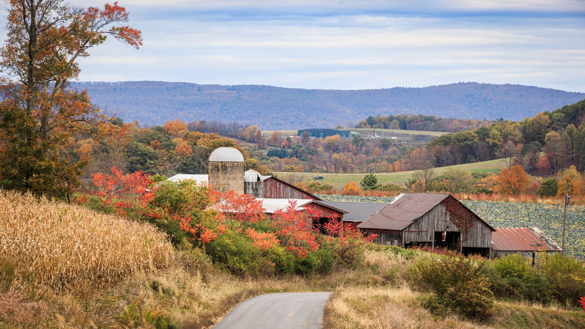

The short version
Jonah Ellery grew up in Ironvale, where his father ran a lathe and his mother drove between the homes of her clients as a home health aide. Dinner moved around their shifts.
He took his first paycheck at 17 on a bottling line in Calder Falls. When the plant closed, he did not leave. He enrolled in an electrical apprenticeship and learned a trade that cannot be sent overseas.
As a union steward, he sat across the table from owners and learned how a contract gets written. As a county commissioner, he learned how a budget gets written. Both taught him the same thing: people do better when the rules are fair.
He is running for the Senate to write those rules for the whole state.
A working life, in order
Born in Ironvale
The son of a machinist and a home health aide. The family calendar was a shift schedule taped to the refrigerator.
First paycheck
A summer job on a bottling line in Calder Falls turns into a full-time position after graduation.
The plant closes
Jonah and 200 coworkers lose their jobs. He enrolls in an electrical apprenticeship at Ironvale Community College.
Journeyman and steward
He earns his journeyman card and is elected shop steward, bargaining his first contract.
Founds the Tri-County Apprenticeship Fund
A nonprofit that pairs laid-off workers with paid training. Example figures are not claimed here.
Elected county commissioner
He wins in Marden County and writes the Good Jobs Ordinance, setting wage standards on county contracts.
Keeps Harlow Clinic open
He brokers an agreement between three counties and a hospital network to keep rural care available.
Launches Senate campaign
He announces from the Ironvale Trades Hall, a few blocks from where he learned his trade.
Biography is fictional and written for illustration.
What he has built
- Good Jobs Ordinance
- Wage and training standards on county contracts, passed with support from both labor and local business owners.
- Tri-County Apprenticeship Fund
- Paid training for workers who lost jobs when local plants closed.
- Harlow Clinic Agreement
- A shared funding deal that kept a rural clinic open when it was scheduled to close.
